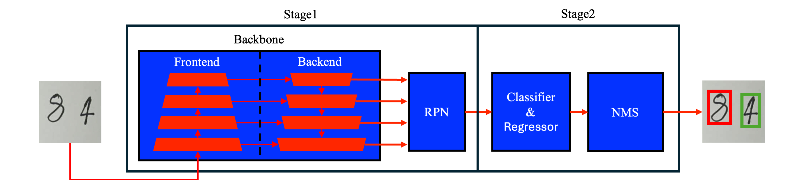

Faster R-CNN for Handwritten Digit Detection
This project focuses on developing a robust solution for handwritten digit detection using the Faster R-CNN framework. Handwritten digit detection is critical in applications like automated form processing, educational assessments, and financial record management. This project demonstrates how Faster R-CNN can be adapted to tackle the complexities of real-world handwritten digit detection tasks.

Project Objectives
- Develop a Detection Model: Adapt Faster R-CNN for detecting multiple handwritten digits in a single image.
- Handle Real-world Challenges: Address overlapping digits, diverse writing styles, and varying object scales.
- Analyze Backbone Performance: Evaluate the impact of different backbone architectures, including ResNet-34-FPN, ResNet-50-FPN, and MobileNetV3-FPN.
Methods
-
Dataset Preparation:
- Collected a dataset of 4190 RGB images containing handwritten digits with diverse writing styles.
- Preprocessed images to ensure uniform size (640x640 pixels) and annotated bounding boxes.
-
Model Adaptation:
- Modified the Faster R-CNN framework to classify digits (0-9) and background.
- Experimented with different backbones for feature extraction, such as ResNet and MobileNetV3.
-
Training Setup:
- Leveraged transfer learning using pre-trained weights on the COCO dataset.
- Employed a Step Decay learning rate scheduler to stabilize training.
-
Evaluation Metrics:
- Evaluated the model using mean Average Precision (mAP), mAP@50, mAP@75, and class-specific metrics.
Results
- Achieved a mean Average Precision (mAP) of 52.2% on the test set using ResNet-34 as the backbone.
- MobileNetV3 demonstrated strong performance in detecting small and large objects.
- Fine-tuning the backbone parameters significantly improved detection accuracy for lightweight architectures.
Project Layout
weights/ # This is where pretrained models are stored
trains/ # Contains run folders for each training process
utils.py
train.py # The train module
test.py # The test module
environment.yml # Defines conda environment for the project
requirements.txt
Note that the weights and trains folder will be created automatically if needed